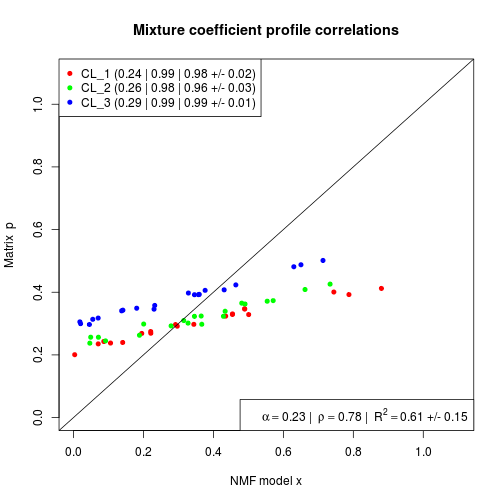

DSAproportions(x, markers, log = NULL, match.names = TRUE, verbose = FALSE) .DSAproportions(x, markers)
NULL, then data's scale is detected by
link{is_logscale} and conversion to linear-scale
is performed if necessary. If TRUE the data is
exponentialised (using log base 2). If FALSE the
data is left unchanged (the detected log scale is
displayed in verbose mode). If a number, then it is used
as the log base to exponentialise the data.markers
should be a list of integer vectors that corresponds to
the indexes of markers for each cell types.a matrix of proportions with the same number of columns
as x and as many rows as elements in
markers (i.e. cell types).
DSAproportions implements the method proposed by
Zhong et al. (2013) as part of the
DSA algorithm. This method
estimates cell proportions from mixed sample expression
data, given a set of markers, i.e. features that are
known to be exclusively expressed by a single cell type
in the mixture.
.DSAproportions is the internal -- non-exported --
function that actually performs the estimation. It
expects a list of valid indexes for each cell type whose
proportions are to be estimated.
Zhong Y, Wan Y, Pang K, Chow LM and Liu Z (2013).
"Digital sorting of complex tissues for cell
type-specific gene expression profiles." _BMC
Bioinformatics_, *14*(1), pp. 89. ISSN 1471-2105,
# random datax <- rmix(3, 100, 20)m <- getMarkers(x)# estimate proportionsp <- DSAproportions(x, m)# plot against true proportionsprofplot(x, p)